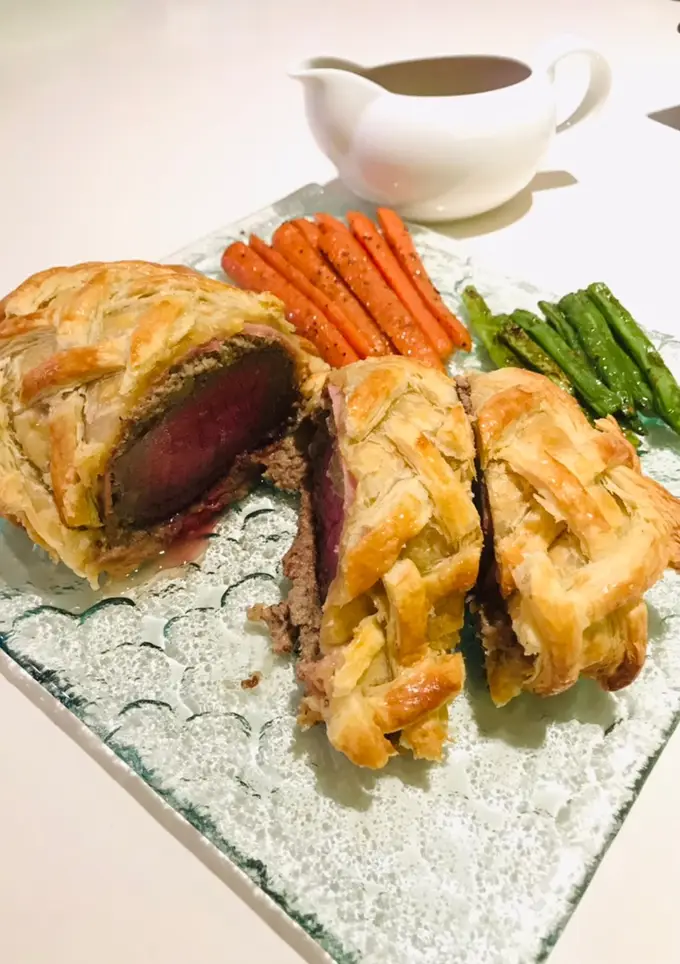

เมนู บีฟเวลลิงตัน
บีฟเวลลิงตัน เป็นเมนูอาหารตะวันตกสุดหรูที่ได้รับความนิยม ประกอบด้วยเนื้อวัวชิ้นโตที่ถูกห่อด้วยชั้นของดักซ์เซลล์ เห็ดบดปรุงรส และแฮมพาร์มา ก่อนจะนำมาห่อด้วยแป้งพัฟเพสทรีกรอบ ทานคู่กับซอสไวน์แดงหรือซอสเกรวี รสชาติกลมกล่อม หรูหรา เหมาะสำหรับโอกาสพิเศษและการเฉลิมฉลอง

เครื่องปรุง
- เนื้อสันใน
- แป้งพัฟสำเร็จ
- ดิจอนมัสตาร์ด
- แฮม
- เกลือ พริกไทย
- ไข่ไก่ 1 ฟอง
- เห็ดกระดุม 12 ดอก
- หอมแดง 2 หัว
- กระเทียม 2 กลีบ
- ใบไทม์สด 2-3 ก้าน
- น้ำมันมะกอก 2 ชต
- เนยสด 1 ชช
- เกลือป่น หยิบมือ
- พริกไทยดำป่น หยิบมือ
วิธีทำ
- ขั้นตอนแรกทำเห็ดดุ๊กเซลล์ไว้ก่อน หั่นเห็ด หอมแดง กระเทียมแล้วนำเข้าเครื่องปั่นเทน้ำมันมะกอกลงไปด้วยให้ปั่นง่ายขึ้น ปั่นพอให้ละเอียดแล้วเทใส่กะทะ
- ใส่ใบไทม์รูดเอาแต่ใบ(ถ้าไม่มีสดใช้แห้งได้)ใส่เนยลงผัดกับเห็ดบดไฟกลาง เห็ดจะคายน้ำออกให้ผัดจนน้ำแห้งเติมเกลือ พริกไทยให้ได้รสชาติพอดีแล้วพักรอไว้
- นำเนื้อสันในทั้งชิ้นที่เป็นท่อนมาทาด้วยเกลือพริกไทยให้ทั่วแล้วนำไปนาบกับกะทะ ใส่เนยนิดหน่อยกับใบไทม์สด2ก้านเพิ่มความหอม นาบแค่พอให้ผิวด้านนอกเปลี่ยนสีให้ทั่วทั้งชิ้น เอาวางพักไว้
- ทามัสตาร์ดให้ทั่วทั้งชิ้นเนื้อรอไว้ วางแผ่นแรปพลาสติกก่อนแล้วนำแฮมมาวางเรียงเท่าความยาวของเนื้อ ทาด้วยเห็ดดุ๊กเซลล์ครึ่งนึงก่อนให้ทั่วแล้ววางชิ้นเนื้อลง
- ทาทับด้วยเห็ดที่เหลือปิดทับให้ทั่วเนื้อแล้วนำแฮมมาคลุมทับแล้วค่อยๆม้วนด้วยพลาสติกแรปให้พอแน่น ม้วนพันหัวท้ายไว้แล้วนำเข้าแช่เย็นไว้ก่อน30นาที
- ถ้าใช้แป้งพัฟสำเร็จแช่แข็งให้เอามาไว้ตู้เย็นธรรมดาก่อน3-4ชั่วโมงนะคะ ตัดแผ่นแป้งให้พอดีที่จะพันเนื้อ โรยแป้งนวลก่อนกันติด วางเนื้อไว้ตรงกลาง ทาด้วยไข่รอบๆแป้งแล้วม้วนพันให้ปิดชิ้นเนื้อให้มิด รึอยากทำแบบตาข่ายให้ตัดแป้งพัฟเป็นเส้นแล้วเรียงสานสลับกันให้เป็นตาข่ายทับด้านบนอีกที
- เปิดวอล์มเตาอบไว้ก่อนใช้ไฟ200 ทาไข่ให้ทั่วแป้งพัฟแล้วใช้มีดกรีดหน้าแป้งเบาๆอย่าให้ขาดถึงเนื้อถ้าทำตาข่ายด้านบนไม่ต้องกรีดค่ะ เข้าอบประมาณ30นาที(แล้วแต่เตาอบของแต่ละคนนะ) แป้งพัฟดูสุกแล้วนำออกมาวางพักไว้ก่อน5–10นาทีก่อนตัด เนื้อที่ได้จะต้องมีสีชมพูต้องไม่สุกเกินไปเนื้อจะด้านไม่นุ่มและไม่อร่อยค่ะ เสริฟพร้อมผักอบตามชอบ
ตารางโภชนาการ
| ส่วนผสม |
พลังงาน (kcal) |
โปรตีน (กรัม) |
ไขมัน (กรัม) |
คาร์โบไฮเดรต (กรัม) |
| เนื้อวัว (150 กรัม) |
300 |
26 |
20 |
0 |
| แฮมพาร์มา (30 กรัม) |
60 |
6 |
3 |
0 |
| เห็ดบด (ดักซ์เซลล์) |
50 |
2 |
1 |
8 |
| แป้งพัฟเพสทรี (50 กรัม) |
200 |
3 |
14 |
17 |
| รวมทั้งหมด |
610 |
37 |
38 |
25 |
แหล่งที่มา